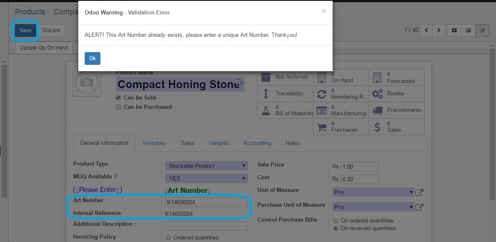

<section class="oe_container">
    <div class="oe_row oe_spaced">
        <div class="oe_span12">
            <h2 class="oe_slogan">Unique Internal Reference for Products</h2>
            <h3 class="oe_slogan">Avoid duplicates and have a backup</h3>
        </div>
        <div class="oe_span8">
            <div class="oe_demo oe_picture oe_screenshot">
                    
            </div>
        </div>
        <div class="oe_span4">
            <p class="oe_mt32">
What this Module does is to make sure you enter a 'Unique' Internal Reference (default_code) for your Products. It includes an 'Alert! Message' that pops up when you enter a code that is already in use. Does your 'Internal Reference' field disappear when you update the product Attributes? This Module also saves a backup of the Internal Reference in a field below, so you still have a copy if it disappears.
            </p>
            <br>Michaelsachin@gmail.com / (mobile: +91-9962327490)</br>
        </div>
    </div>
</section>

